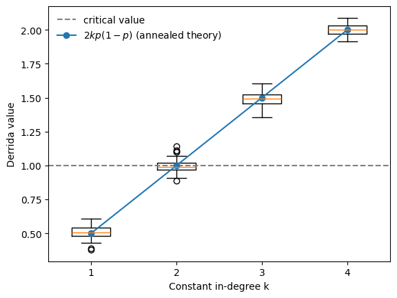
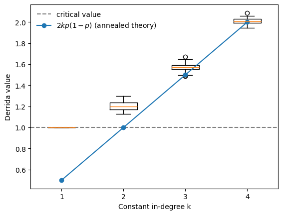
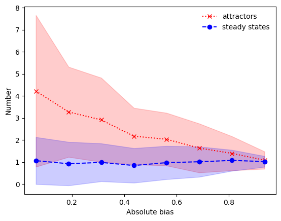

Ensemble experiments with random Boolean networks
This tutorial demonstrates how BoolForge’s ability to generate random Boolean networks with controlled structural and functional properties is essential for many types of studies. Specifically, it enables:
- Null model comparisonsAre biological networks structurally or dynamically different from random networks?
- Ensemble studiesHow do structural properties such as degree or canalization affect network dynamics?
What you will learn
In this tutorial you will learn how to generate random Boolean networks with:
specific structural properties (e.g., degree, degree distribution, strongly connected),
prescribed functional properties (e.g., canalization, bias),
It is strongly recommended to complete Tutorials 4 and 5 on random function generation first.
Setup
[1]:
import boolforge as bf
import numpy as np
import matplotlib.pyplot as plt
NK Kauffman networks
One of the classical models of complex systems is the NK random Boolean network introduced by Stuart Kauffman.
In this model:
The network contains N nodes.
Each node is regulated by k inputs.
Each update function is generated randomly with bias \(p\), i.e.
probability of output 1:
pprobability of output 0:
1-p
A key theoretical result due to Derrida and Pomeau (1986) predicts how a single-node perturbation propagates in large random Boolean networks. They showed that if two network states differ in one node, the expected number of differences after one update step is \(2kp(1-p)\).
If this value is
\(< 1\), then perturbations decrease on average (ordered regime)
\(> 1\), then perturbations increase on average (chaotic regime)
\(= 1\), then perturbations remain on average of equal size (critical boundary)
The expected number of propagated perturbations is called the Derrida value.
[2]:
N = 100 # network size
ks = range(1,5) # constant in-degree
n_networks = 50 # ensemble size
p = 0.5 # bias p: probability of ones in truth table
derrida_values = []
for k in ks:
derrida_values.append([])
for _ in range(n_networks):
bn = bf.random_network(N, k, bias = p, allow_degenerate_functions=True)
derrida_values[-1].append( bn.get_derrida_value(exact=True) )
plt.boxplot(derrida_values, positions=list(ks))
plt.axhline(1, linestyle="--", color="gray", label="critical value")
plt.plot(ks, [2*k*p*(1-p) for k in ks], "o-", label=r"$2kp(1-p)$ (annealed theory)")
plt.xlabel("Constant in-degree k")
plt.ylabel("Derrida value")
plt.legend(frameon=False);

The numerical results closely follow the theoretical prediction \(2kp(1-p)\) derived under the annealed approximation. The phase transition occurs when the Derrida value crosses 1.
For unbiased Boolean functions (with bias \(p=0.5\)), the theory predicts the critical connectivity \(k=2\), which we also observe in this BoolForge ensemble experiment.
We encourage the reader to vary the bias \(p\) in the above example. As the bias becomes more extreme, the Derrida value declines and networks with higher connectivity exhibit critical dynamics.
BoolForge philosophy: regulatory functions are non-degenerate
The classical NK model assumes that a Boolean function with \(k\) inputs may not actually depend on all of them. Such functions are called degenerate.
While this assumption is natural in statistical physics models (e.g. spin glasses), it is biologically questionable. In gene regulatory networks, an input typically represents a specific regulatory interaction. If a transcription factor does not affect the gene, it should not appear as an input in the first place. Therefore BoolForge assumes non-degenerate Boolean functions by default.
Degeneracy occurs frequently for small input sizes:
\(k=1\): 2 out of 4 functions are degenerate (50%)
\(k=2\): 6 out of 16 functions are degenerate
larger \(k\): degeneracy becomes increasingly rare
Disallowing degenerate functions therefore mainly affects sparse networks, precisely the regime most biological networks operate in (typical average in-degree \(approx\) 2-3).
We now repeat the previous experiment, disallowing degenerate functions.
[3]:
derrida_values = []
for k in ks:
derrida_values.append([])
for _ in range(n_networks):
bn = bf.random_network(N, k, bias = p, allow_degenerate_functions=False)
derrida_values[-1].append( bn.get_derrida_value(exact=True) )
plt.boxplot(derrida_values, positions=list(ks))
plt.axhline(1, linestyle="--", color="gray", label="critical value")
plt.plot(ks, [2*k*p*(1-p) for k in ks], "o-", label=r"$2kp(1-p)$ (annealed theory)")
plt.xlabel("Constant in-degree k")
plt.ylabel("Derrida value")
plt.legend(frameon=False);

The behavior changes substantially. For unbiased, non-degenerate Boolean networks (with bias :math:`p=0.5`) the phase transition occurs already at \(k=1\), rather than \(k=2\), as predicted by the classical NK theory.
This illustrates how biologically motivated modeling assumptions can significantly affect the predicted dynamical regime of Boolean networks.
Random networks with prescribed canalization
A major advantage of BoolForge is its ability to generate Boolean functions with controlled canalization properties. This is important because canalization is a common feature of biological regulatory networks.
To display the impact of the canalizing layer structure, we generate ensembles of Boolean networks of fixed size and fixed in-degree, which are governed by nested canalizing functions of variable layer structure.
[4]:
N = 12 # network size
n = 5 # constant in-degree
n_networks = 100 # ensemble size
all_hamming = np.arange(1, 2 ** (n - 1), 2)
all_abs_bias = 2 * np.abs(all_hamming/2**n - 0.5)
number_attractors = []
number_steady_states = []
for i, w in enumerate(all_hamming):
layer_structure = bf.hamming_weight_to_ncf_layer_structure(n, w)
number_attractors.append([])
number_steady_states.append([])
for _ in range(n_networks):
bn = bf.random_network(N, n, layer_structure=layer_structure)
attr_info = bn.get_attractors_synchronous_exact()
n_attractors = attr_info['NumberOfAttractors']
number_attractors[-1].append( n_attractors )
number_steady_states[-1].append(
sum([len(a)==1 for a in attr_info['Attractors']])
)
fig,ax = plt.subplots()
mean, std = np.mean(number_attractors,1), np.std(number_attractors,1)
ax.plot(all_abs_bias, mean, 'rx:', label='attractors')
ax.fill_between(all_abs_bias, mean-std, mean+std, color='r', alpha = 0.2)
mean, std = np.mean(number_steady_states,1), np.std(number_steady_states,1)
ax.plot(all_abs_bias, mean, 'bo--', label='steady states')
ax.fill_between(all_abs_bias, mean-std, mean+std, color='b', alpha = 0.2)
ax.set_xlabel("Absolute bias")
ax.set_ylabel("Number")
ax.legend(frameon=False,loc='best');

This plot shows: The higher the absolute bias of the governing nested canalizing functions, the more ordered the dynamics, characterized by the presence of only a few network attractors, which are primarily steady states.
Summary and outlook
In this tutorial you learned how to:
compute exact robustness measures for small Boolean networks,
interpret coherence and fragility at network, basin, and attractor levels,
approximate robustness measures for larger networks, and
assess dynamical sensitivity using the Derrida value.
In Tutorial 11, we will finally analyze biological Boolean network models and design null models and ensemble experiments.